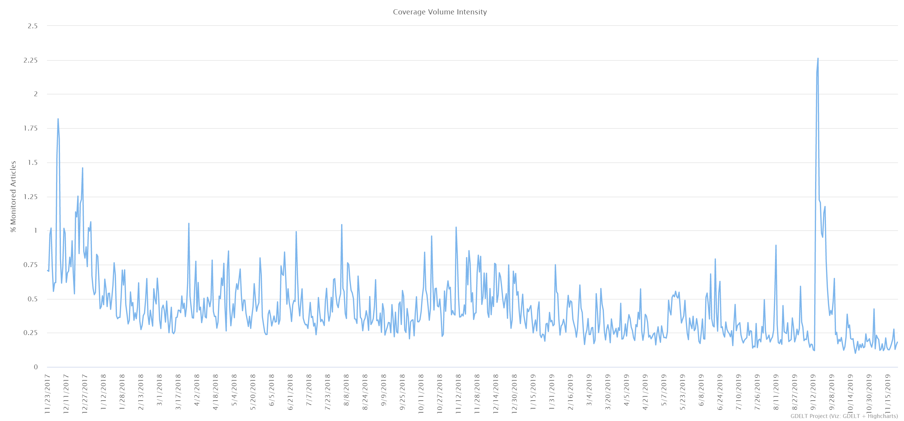

We use tools to analyse print, broadcast, and web news media in over 100 languages from across every country in the world.
This weeks featured tone timeline displays the average emotional "tone" (from extremely negative to extremely positive) of all coverage monitored by day/hour over the past 3 months. It offers a quick visual gauge of the emotional tenor and kind of for each leader.
When mapping the locations of the world’s news outlets, the difference between geographic focus and geographic location offers a powerful lesson in how we see the world and how different data gives us different perspectives.
Click on the locations above to highlight the number of times that location has been mentioned. This dataset is extracted using the GDELT GEO 2.0 API. The results are stored locally in geojson format and applied to the Google Map. A few lines of SQL using Google Big Query will deliver results 'live' / updated every 15 minutes or for a specified period of time.
The power of GDELT helps us monitor global online news coverage for any keyword. We can highlight which keywords are trending up and down. In the example below we see a steady decline in the mentions of 'Yemen'. In previous analysis we were able to highlight an increase globally in coverage including the keyword 'recession'.
This query can be applied to any online news domain. In fact GDELT can be queried using keyworks, themes and much more. Over the next week we will be creating coverage maps for a number of online news domains for the same time frame to generate further insights into global news coverage.